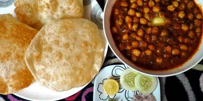

"Chole Bature"
|

|
HistoryBoth chole and bhatura are two separate dishes eaten together. It falls under the North Indian Cusine of India. This dish of Chole Bhature has originated from the state of Punjab and is known throughout the country for its delicious tangy taste. This recipe cannot be categorized under one such category. Chole Bhature can fall under fast food, street food, complete and as a breakfast item. Going by popular beiefs, victorious kings were served Chole Bature on their return from wars. The biger size bature denoted a higher ranking person. Also Chole Bature was the perfect solution for travellers as the bread used to last longer than any other bread. There are many versions in which people from Monga district of punjab have claimed that the original recipie started from their district. However, people of many other districts have made such claims as well. |
Ingredients
|
RecipieFor chole: In a pan add oil, bay leaf, cinnamon, cumin seeds, cloves, whole pepper corns, green and black cardamom. After it gets brown add chopped onions and saute it. After sauteing add chopped ginger and garlic. Then add turmeric, chili powder, coriander powder, cumin powder, asafoetida, salt and fry well.
For de glazing the pan add little water.
Now add the chole (soaked overnight and pressure cooked) to the masala. After stirring well add tomatoes, little sugar and salt to the chole (chickpeas). Now add ajwain, chopped green chilies and water for the base. To get the color in the chole, add a tea bag to the masala. Simmer the chole gently for an hour and cover it. Add lime juice and a dollop of butter to it. Garnish the chole with coriander and butter. Serve the chole hot with bhaturas. For the bhaturas: Knead the whole wheat flour, maida and salt together with adequate amount of water. Sprinkle the yeast on top. Leave it for 2-3 hours for the yeast to work. Divide it into equal portions. Roll out in an oval or round shape. Deep fry till golden brown, like a puri. Serve. |
Akhil
Kavin